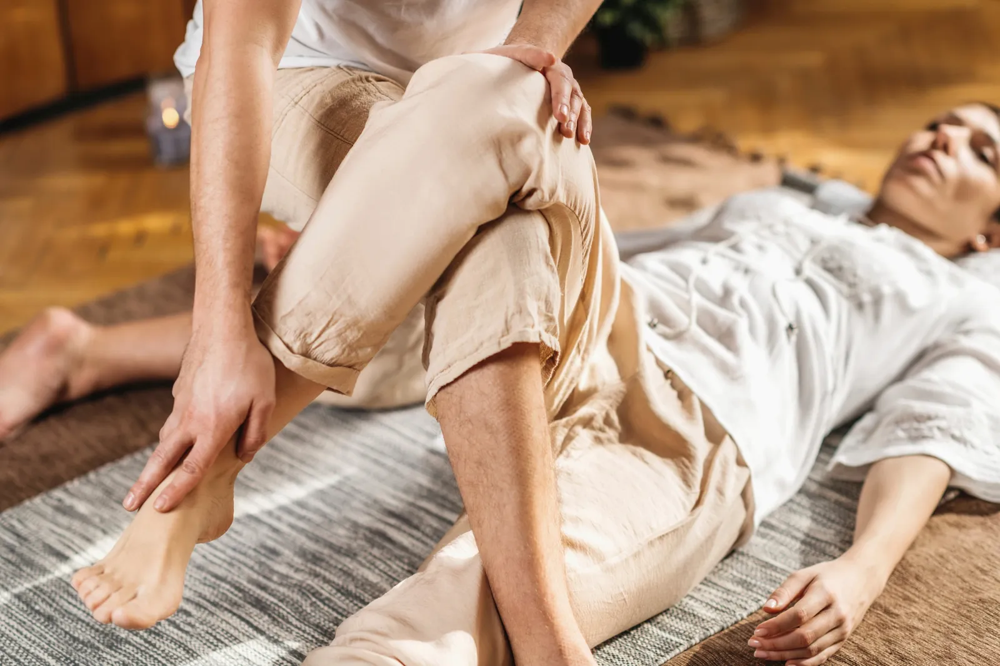

Spanning eruit,ruimte erin
- Op de mat, met je kleding aan
- Afgestemd op jouw klachten
- Natuurlijke olie en Thaise balsem

Nieuw bij Cura Thai? € 30 korting
Gebruik de code bij je eerste boeking van een massage van 90 minuten.
Kies je massage
Losse behandelingen zijn drie maanden geldig. Na je boeking plan je samen met Juniska je moment.
Traditionele Thaise massage
3 opties
90 minuten 90 min
€ 120De uitgebreide behandeling: tijd voor je hele lichaam en diepe ontspanning.
Aanbevolen als je voor het eerst komt of één keer per maand60 minuten 60 min
€ 90Gerichte aandacht voor je lichaam, ideaal als onderdeel van vaste zelfzorg.
Voor wie minstens twee keer per maand komt en zelf onderhoud doet, bijvoorbeeld met yoga30 minuten 30 min
€ 50Een volledige Thaise massage in een kort protocol: de krachtigste houdingen en technieken om je lichaam van top tot teen te resetten.
Thaise deep tissue olie massage
2 opties
Rug, schouders en nek 30 min
€ 55Een stevige massage met duimen, handen, ellebogen en onderarmen. Met natuurlijke olie en Thaise balsem (zingiber cassumunar en kamfer) die de spieren ontspant.
Benen 30 min
€ 55Gericht op je benen: spieren los, doorbloeding op gang. Let op: dit is geen ontspanningsmassage, maar een stevige behandeling met diepgaand effect.
Zwangerschapsmassage
1 optie
Thaise zwangerschapsmassage 60 min
€ 110Zachte drukpunten, passieve strekkingen en vloeiende bewegingen. Helpt bij zwangerschapskwaaltjes zoals rug- en bekkenpijn, vocht vasthouden en slecht slapen. Ook na de bevalling kun je terecht voor een postpartummassage.
Abonnementen
2 opties
2x per maand, 90 minuten
€ 218,79per maandTwee massages van 90 minuten per maand. Maandcontract dat doorloopt tot je opzegt.
4x per maand, 90 minuten
€ 399per maandVier massages van 90 minuten per maand, plus onbeperkt meedoen aan de Thai Hand Class. Maandcontract dat doorloopt tot je opzegt.

Yoga die je ontvangt
Traditionele Thaise massage, ook wel Thaise yogamassage, combineert elementen van yoga, acupressuur en ayurveda. Je ligt op een mat en houdt je kleding aan.
Juniska brengt je lichaam in yoga-achtige houdingen, zet druk op de energielijnen en strekt je spieren voor je. Zo komen de energiestromen in je lichaam weer in balans.
- Bevordert de doorbloeding en het lymfesysteem
- Maakt je soepeler, in lichaam en hoofd
- Helpt spanning en stijve spieren los te laten
Boeken, betalen, annuleren
Veelgestelde vragen
Wat trek ik aan?
Comfortabele kleding waarin je goed kunt bewegen. Je houdt je kleding de hele behandeling aan. Sokken vergeten? Cura Thai sokken liggen klaar voor € 3,50.
Kies ik 60 of 90 minuten?
Kom je voor het eerst, of één keer per maand? Kies dan 90 minuten. Kom je vaker en doe je zelf aan onderhoud, bijvoorbeeld met yoga, dan is 60 minuten genoeg.
Moet ik lenig zijn?
Nee. Juniska past elke houding aan op jouw lichaam en je mag altijd aangeven wat je minder prettig vindt.
Hoe voel ik me na afloop?
Vaak rustig en lichter, soms ook even moe. Drink genoeg water, neem een kopje gember- of brandnetelthee en beweeg rustig. Je lichaam werkt nog even door.
Waar is de praktijk?
Aan de Oliemolenstraat 60 in Heerlen. Behandelingen zijn op afspraak. Bekijk de route.

Klaar om los te laten?
Boek online, of stuur eerst je vraag via WhatsApp.